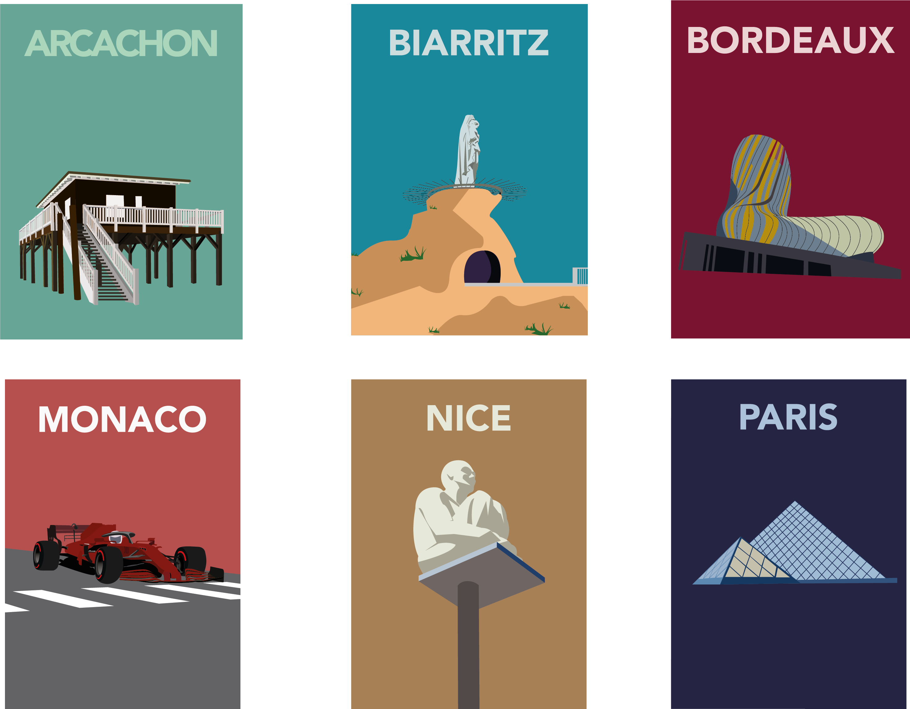
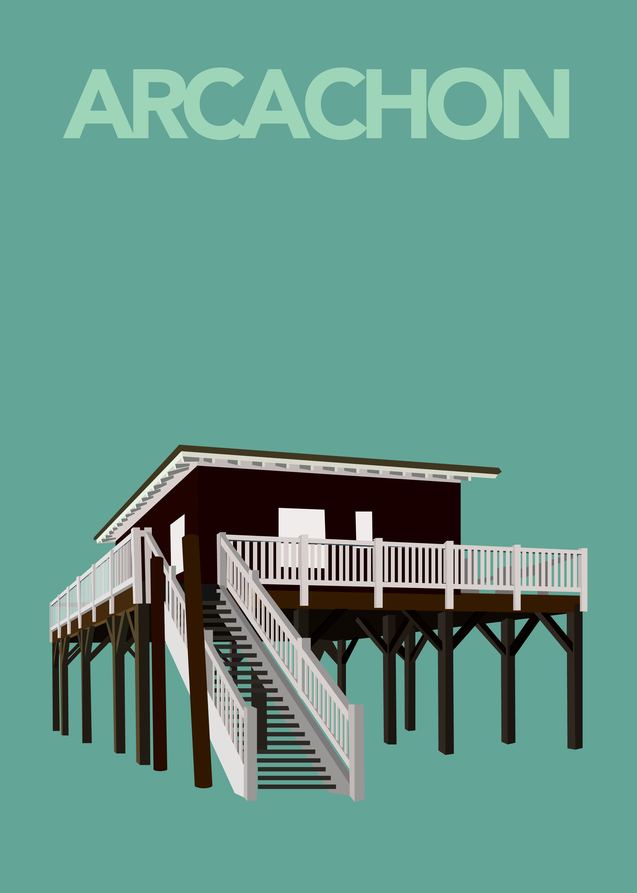
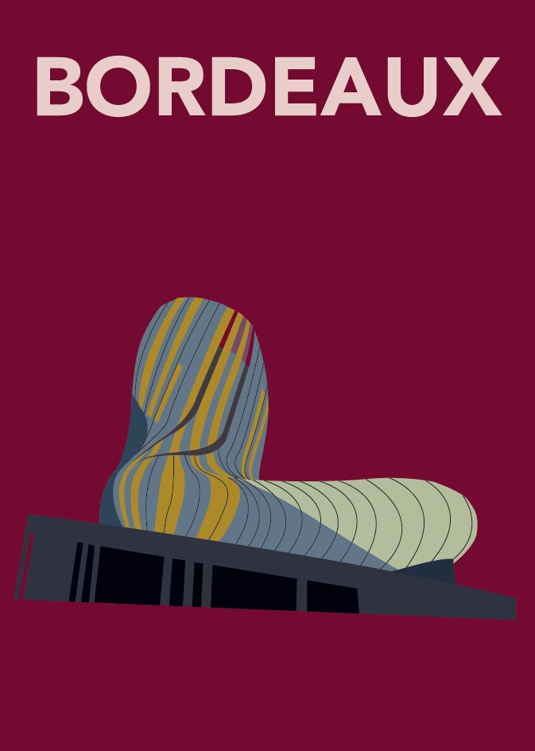
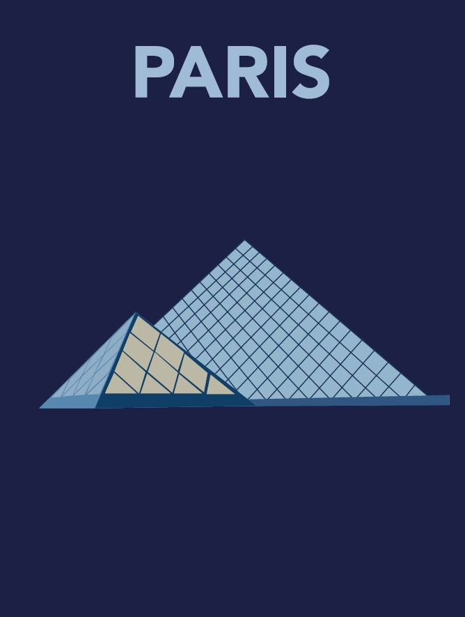
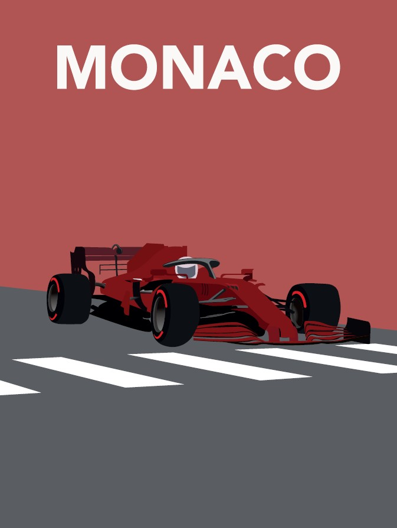

L'essence du projet
Affiches de Villes est une série d'illustrations personnelles née de mes carnets de voyage. À chaque destination, je sélectionne les monuments qui m'ont le plus marquée ou qui définissent l'âme de la ville. L'idée est de créer une collection de souvenirs graphiques, mêlant architecture, géométrie et émotions vécues sur place.
La démarche artistique
Chaque affiche est un travail de synthèse. J'épure les lignes des monuments pour ne garder que leur silhouette iconique. J'utilise une palette de couleurs restreinte, souvent inspirée par la lumière locale (le bleu du bassin d'Arcachon), afin de créer un univers visuel cohérent pour l'ensemble de la série.
La Série en cours
D'autres villes viennent s'ajouter à la collection au fil de mes déplacements. Voici un aperçu des prochaines étapes de ce projet personnel.

Affiches finiArcachon

Arcachon / 01Illustration Cabane Tchanquée Bassin d'Arcachon.


BordeauxLa Place de la Bourse et l'harmonie de la pierre blonde.

ParisL'intemporalité de la Dame de Fer et des toits haussmanniens.

MonacoLe Rocher, son Palais et l'architecture de la Principauté.
Supports Finalisés
Ces affiches sont conçues pour être imprimées en A3 sur papier d'art texturé, pour un rendu qui rappelle les affiches de voyage vintage, mais avec un traitement graphique minimaliste et contemporain.